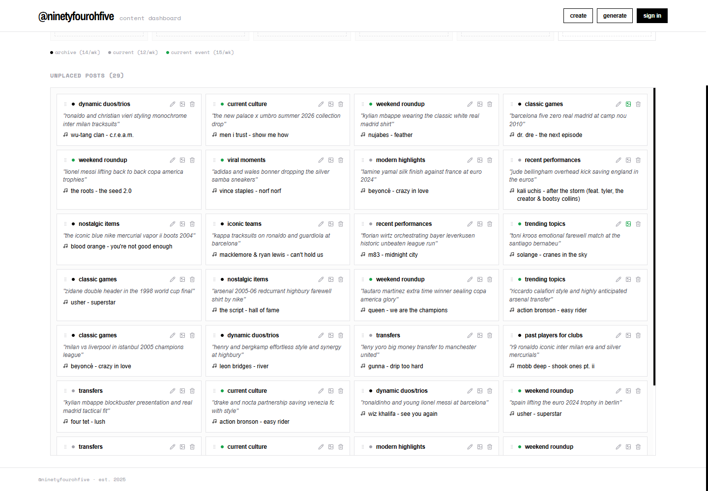

Independent thinking. End-to-end making.A portfolio by Sheikh
Designer &
developer.
↓Explore selected work
I care about how it looks.
And how it works.
I design digital experiences and build the systems behind them.
Selected work
Two projects, from idea to interface.
Loage
Product design & full-stack development
A watchlist built around your taste. Compare two films, choose your favorite, and let your personal ranking take shape.
From the comparison flow to the ranking logic, watchlist, viewing diary, and recommendations.
Explore the project ↗
a content dashboard for
@ninetyfour
ohfive
from the archive
to the feed.
The workspace behind
the stories, images, and music.

the content pool ↗
For @ninetyfourohfive
Content workflow & full-stack development
A workspace for curating a football and streetwear archive. Plan the week, find the right images, and turn a subject into a carousel.
A considered interface for scheduling, image selection, captions, and music matching, backed by a Python API.
Explore the project ↗A bit about me
Hey, I’m Sheikh.
Good design deserves
a thoughtful build.
I’m a designer and developer who builds full-stack projects end to end: the frontend, the backend, and the database in between.
I like being involved in both the design decisions and the details that make them work. If you’re a designer looking for someone who can think alongside you and write the code, we’ll have a lot to talk about.
On the design side
Interface design
Interaction & visual detail
Figma & Adobe Creative Cloud
On the development side
React & TypeScript
Python & Node.js
APIs & databases